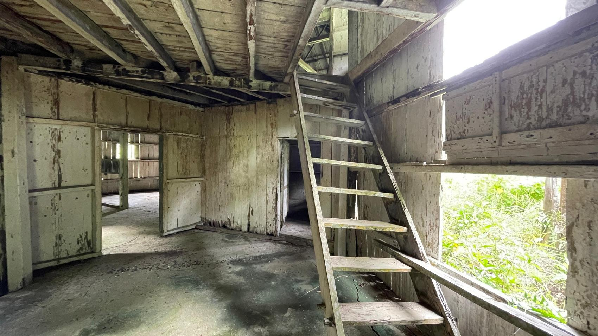
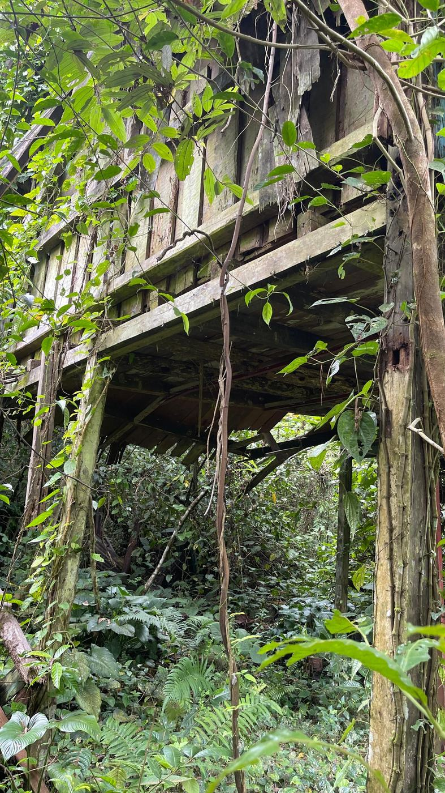
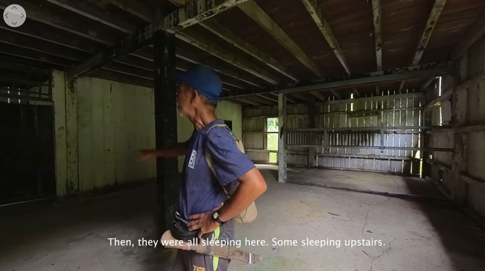
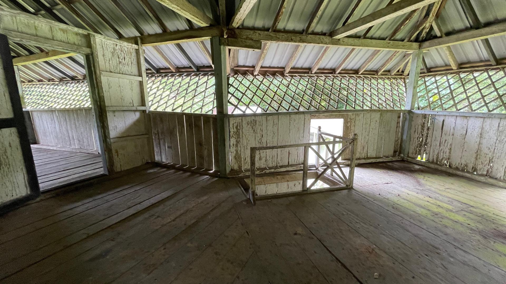
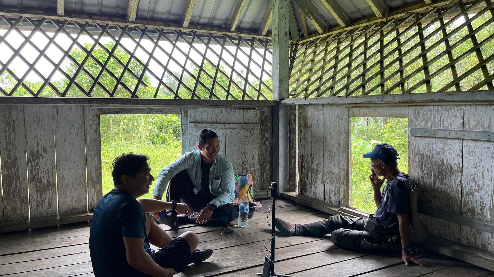
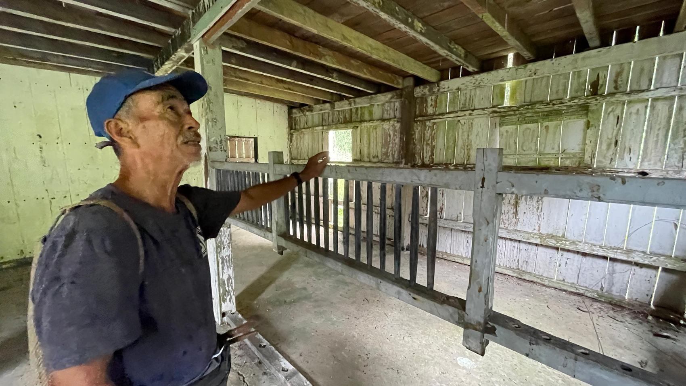
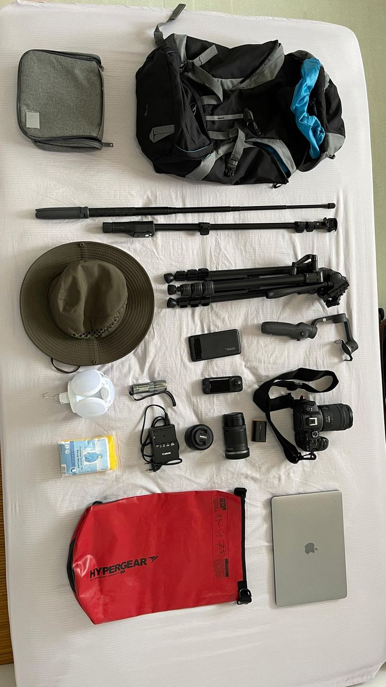
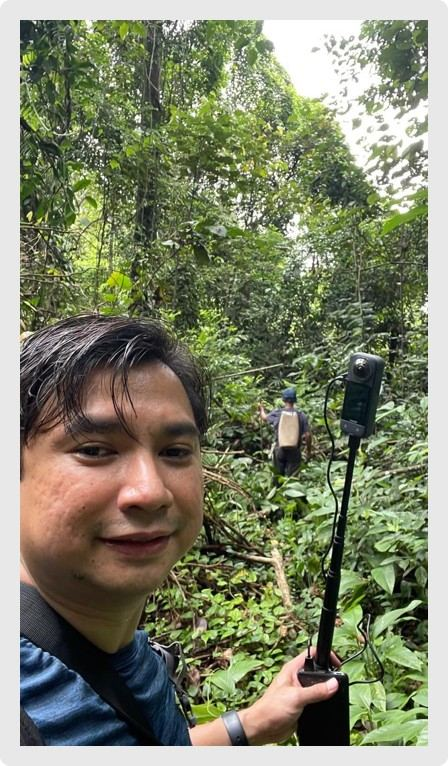

Long Akah Fort
Immersive Storytelling
- Location
- Long Akah, Baram, Sarawak
- Built
- 1929 · Brooke dynasty
- Method
- 360° Cinematic Virtual Reality
A colonial-era fort, reopened through a lens.
This creative practice research, a Non-Traditional Research Outcome (NTRO), explores the intersection of immersive storytelling, education, and heritage policy through the documentation of Long Akah Fort — an endangered colonial-era fort in northern Sarawak, Malaysia, built in 1929.
Once a military post and trading hub during the Brooke dynasty, the fort and its surrounding Kenyah settlement hold both tangible heritage — architecture, artefacts — and intangible heritage: oral histories, cultural practices, and local memories.


Despite its significance, left to decay.
Despite its significance, Long Akah Fort is left vulnerable to decay and erasure. Timber rots, roofs give way, and the settlement's living memory — the stories only its elders still carry — is harder to recover with every year that passes.
Documenting the fort now, while those who lived and worked within it can still describe it firsthand, is what makes this research urgent rather than simply archival.
Filmed in 360°, so the fort can be walked through remotely.
The research employs Mobile Cinematic Virtual Reality using 360-degree video to capture and disseminate the stories of the fort and community. This method enables immersive, place-based storytelling that evokes presence — making it possible for audiences, particularly secondary school students, to experience the heritage site remotely.


Once the fort's upper sleeping quarters, now open to the sky and the forest that surrounds it.
Then, they were all sleeping here. Some sleeping upstairs.Mr. Peter · recorded inside Long Akah Fort, in memoriam
Told by the people who remember it.
By recording first-person narratives from elders, community leaders, and historians, this project safeguards a disappearing body of knowledge and reframes the fort's story away from colonial perspectives, toward those of the local communities — aligning with decolonial research agendas.


A classroom that fits in a headset.
The project engages with Malaysia's National Education Blueprint 2013–2025 and heritage preservation policy, demonstrating how immersive media can be integrated into curricula to foster national unity, identity, respect for cultural diversity, and heritage awareness.
Advances Cinematic VR as a practical tool for cultural preservation before decay takes the fort entirely.
Lets secondary school students anywhere step inside a heritage site they could otherwise never visit.
Contributes new knowledge at the intersection of post-colonial theory, heritage policy, and mobile documentary practice.
Carried in on foot, into the Baram interior.
A 360-degree camera, gimbal, spare batteries, tripod, and a waterproof pack — everything the team needed to reach Long Akah and bring its stories back out, carried the same way the fort itself was once supplied.


Situated in post-colonial and heritage theory.
By situating this work within post-colonial theory and intangible cultural heritage frameworks, the research contributes new knowledge to the field of mobile documentary — advancing both scholarly and practical applications of Cinematic VR for cultural preservation, educational innovation, and policy engagement. The resulting NTRO stands as a living digital archive, ensuring the fort's stories, memories, and significance endure for future generations.